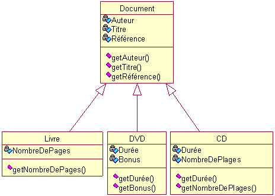

L'Héritage
L'héritage est un concept fondamental de la programmation orientée objet, permettant de créer de nouvelles classes à partir de classes existantes. En définissant une classe "parente" (appelée aussi "superclasse"), on peut créer des classes "enfant" (ou "sous-classes") qui héritent des attributs et des méthodes de la classe parente.
L’héritage permet de réutiliser du code et de créer des structures plus organisées en regroupant les fonctionnalités communes dans une superclasse. Les sous-classes peuvent également être étendues pour inclure des fonctionnalités supplémentaires ou spécialisées sans devoir redéfinir tout le code de la superclasse.
Attention toutefois, les sous-classes ne peuvent accéder qu'aux méthodes et attributs que la classe parente expose dans son interface publique ou protégée. Les membres privés de la classe parente ne sont pas directement accessibles aux sous-classes, garantissant ainsi l'encapsulation des détails internes de la classe parente.
Dans l'exemple ci-dessus, la classe Document sert de superclasse. Trois classes enfants héritent de la classe Document, chacune ayant des attributs uniques correspondant à leur fonctionnement, ainsi que de nouvelles méthodes.
/** Exemple JAVA */
Livre livre = new Livre("Asimov", "Fondation", "SF", 350);
livre.getAuteur(); // retourne "Asimov"
livre.getNombreDePages(); // retourne 350
DVD dvd = new DVD("Nolan", "Interstellar", "SF", "3h30", "Aucun");
dvd.getAuteur(); // retourne "Nolan"
dvd.getDurée(); // retourne "3h30"
List<.Document> list = new ArrayList<.Document>();
list.add(livre);
list.add(dvd);
for (Document doc : list) {
doc.getTitre(); // affiche le titre de chaque document
}
Exemple
Nous créons un nouvel objet ChronoSportHorloge qui hérite de la classe Horloge et intègre de nouveaux attributs. Cet objet possède une logique métier distincte, car il est conçu pour représenter un chrono de sport, par exemple, pour un tableau de scores. En utilisant l'héritage, ChronoSportHorloge bénéficie des fonctionnalités de base de Horloge, tout en ajoutant des éléments spécifiques à la gestion des événements sportifs.
/** Exemple JAVA */ public class ChronoSportHorloge extends Horloge { private int idPersonne; private String event; private String categorie; public ChronoSportHorloge(int heure, int minute, int seconde, String nom, int idPersonne, String event, String categorie) { super(heure, minute, seconde, nom); // Appel du constructeur de la superclasse this.idPersonne = idPersonne; this.event = event; this.categorie = categorie; } // Méthode pour obtenir les informations de la personne et de l'événement public String getSportInfo() { return String.format("ID Personne: %d, Événement: %s, Catégorie: %s", idPersonne, event, categorie); } @Override public String toString() { return String.format("ChronoSportHorloge de %s: %s, %s", nom, getFormattedTime(), getSportInfo()); } }# Exemple PYTHON class ChronoSportHorloge(Horloge): def __init__(self, heure, minute, seconde, nom, id_personne, event, categorie): super().__init__(heure, minute, seconde, nom) # Appel du constructeur de la superclasse self.id_personne = id_personne self.event = event self.categorie = categorie # Méthode pour obtenir les informations de la personne et de l'événement def get_sport_info(self): return f"ID Personne: {self.id_personne}, Événement: {self.event}, Catégorie: {self.categorie}" def __str__(self): return f"ChronoSportHorloge de {self.nom}: {self.get_formatted_time()}, {self.get_sport_info()}"
Polymorphisme
Le polymorphisme est un concept clé en programmation orientée objet qui permet à des objets de différentes classes d'être traités comme des instances de la même classe parente. Il s’agit d’un mécanisme qui offre la possibilité d’utiliser une même interface pour des types différents, ce qui simplifie le code et le rend plus flexible.
Il existe principalement deux types de polymorphisme : le polymorphisme de méthode et le polymorphisme paramétrique.
Le polymorphisme de méthode
Aussi appelé surcharge et redéfinition (ou override), permet à une classe d'avoir plusieurs méthodes avec le même nom mais avec des signatures différentes (dans le cas de la surcharge) ou d'une méthode de la classe parente d'être redéfinie dans la classe enfant (dans le cas de la redéfinition).
Exemple redéfinition
/** Exemple JAVA - redéfinition */
public class Horloge {
// Attributs et méthodes précédents...
public void information() {
System.out.println("L'heure actuelle est : " + afficherHeure());
}
}
public class ChronoSportHorloge extends Horloge {
@Override
public void information() {
System.out.println("Chrono de " + nom + " - Événement : " + event +
", Catégorie : " + categorie +
" - Heure : " + afficherHeure());
}
}
Exemple d'utilisation
/** Exemple JAVA */
public class Main {
public static void main(String[] args) {
Horloge horloge = new Horloge(10, 30, 0, "Horloge Standard");
horloge.information(); // Affiche "L'heure actuelle est : 10:30:00"
ChronoSportHorloge chronoSport = new ChronoSportHorloge(11, 45, 30, "Marathon", 101, "Marathon de Paris", "Course");
chronoSport.information(); // Affiche "Chrono de Marathon - Événement : Marathon de Paris, Catégorie : Course - Heure : 11:45:30"
}
}
Exemple surcharge
/** Exemple JAVA - surcharge */
public class Horloge
{
private int secondes; // Stocke le temps en secondes
// Surcharge : setTime avec uniquement l'heure
public void setTime(int heure) {
this.secondes = heure * 3600; // Convertit l'heure en secondes
}
// Surcharge : setTime avec heure et minute
public void setTime(int heure, int minute) {
this.secondes = heure * 3600 + minute * 60; // Convertit en secondes
}
// Surcharge : setTime avec heure, minute et seconde
public void setTime(int heure, int minute, int seconde) {
this.secondes = heure * 3600 + minute * 60 + seconde; // Convertit tout en secondes
}
}
Exemple d'utilisation
/** Exemple JAVA */
public class Main {
public static void main(String[] args) {
// Création d'une instance de Horloge
Horloge horloge = new Horloge(10, 30, 0, "Horloge Standard");
horloge.afficherHeure(); // Affiche "L'heure actuelle est : 10:30:00"
// Changer l'heure uniquement
horloge.setTime(11);
horloge.afficherHeure(); // Affiche "L'heure actuelle est : 11:00:00"
// Changer l'heure et les minutes
horloge.setTime(12, 15);
horloge.afficherHeure(); // Affiche "L'heure actuelle est : 12:15:00"
// Changer l'heure, les minutes et les secondes
horloge.setTime(14, 45, 30);
horloge.afficherHeure(); // Affiche "L'heure actuelle est : 14:45:30"
}
}
Le polymorphisme paramétrique
Le polymorphisme paramétrique, quant à lui, se réfère souvent à l'utilisation de types génériques. Cela permet d’écrire des méthodes ou des classes qui peuvent fonctionner avec n'importe quel type de données. Par exemple, une fonction de tri générique peut trier des listes de n'importe quel type d'objets, tant qu'ils implémentent une certaine interface de comparaison.
Prenons un exemple dans le contexte d'un jeu vidéo, où nous avons une classe abstraite Personnage, ainsi que des sous-classes Paladin, Mage et Voleur, chacune ayant sa propre implémentation de la méthode attaquer().
Classe abstraite
Tout d'abord, nous définissons la classe abstraite Personnage, qui contient une méthode abstraite attaquer() :
/** Exemple JAVA */
public abstract class Personnage {
protected String nom;
public Personnage(String nom) {
this.nom = nom;
}
// Méthode abstraite que chaque sous-classe doit implémenter
public abstract void attaquer();
}
Une classe abstraite est une classe qui ne peut pas être instanciée directement, mais qui sert de modèle pour d'autres classes. Elle peut contenir des méthodes abstraites (celles qui n'ont pas d'implémentation) ainsi que des méthodes concrètes (celles qui ont une implémentation). Les classes qui héritent d'une classe abstraite doivent fournir une implémentation pour toutes les méthodes abstraites, sauf si elles sont elles-mêmes abstraites.
Caractéristiques d'une classe abstraite
- Non-instanciable : On ne peut pas créer d'objets directement à partir d'une classe abstraite. Par exemple, si vous avez une classe Personnage, vous ne pourrez pas faire Personnage perso = new Personnage();.
- Méthodes abstraites : Une classe abstraite peut contenir des méthodes abstraites qui n'ont pas de corps. Ces méthodes doivent être implémentées par les sous-classes. Par exemple, dans une classe Personnage, vous pourriez avoir une méthode abstraite takeDamage().
- Méthodes concrètes : Une classe abstraite peut également contenir des méthodes qui ont une implémentation. Ces méthodes peuvent être utilisées directement par les sous-classes.
- Héritage : Les classes qui héritent d'une classe abstraite doivent implémenter toutes les méthodes abstraites, sinon elles doivent être déclarées comme abstraites elles aussi.
Sous-classes Paladin, Mage, et Voleur
Ensuite, nous définissons nos sous-classes, chacune avec sa propre logique d'attaque :
/** Exemple JAVA */
public class Paladin extends Personnage {
public Paladin(String nom) {
super(nom);
}
@Override
public void attaquer() {
System.out.println(nom + " attaque avec son épée sacrée !");
}
}
public class Mage extends Personnage {
public Mage(String nom) {
super(nom);
}
@Override
public void attaquer() {
System.out.println(nom + " lance un sort puissant !");
}
}
public class Voleur extends Personnage {
public Voleur(String nom) {
super(nom);
}
@Override
public void attaquer() {
System.out.println(nom + " attaque par surprise avec un coup de couteau !");
}
}
Utilisation du polymorphisme
/** Exemple JAVA */
public class Main {
public static void main(String[] args) {
// Création d'une liste de personnages
List<.Personnage> personnages = new ArrayList<.Personnage>();
personnages.add(new Paladin("Lyanna"));
personnages.add(new Mage("William"));
personnages.add(new Voleur("Blaid"));
// Appel de la méthode attaquer() pour chaque personnage
for (Personnage personnage : personnages) {
jouerSonTour( personnage ) // Appelle la méthode appropriée selon le type de personnage
}
}
// Méthode qui utilise le polymorphisme
public static void jouerSonTour(Personnage perso)
{
perso.attaquer(); // Appelle la méthode attaquer(), polymorphe
}
}
/** Retour
Lyanna attaque avec son épée sacrée !
William lance un sort puissant !
Blaid attaque par surprise avec un coup de couteau !
*/